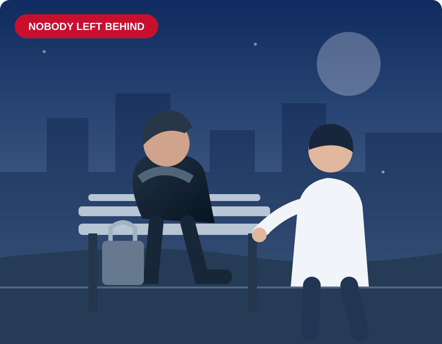

🏠 Housing
Find the right local homelessness, housing and tenancy-support routes. In England, specialist veteran homelessness referral services include Op FORTITUDE.
Whether you're experiencing homelessness, living securely but struggling in other ways, seeking specialist wellbeing support or planning your next career, we want to help you find a practical next step.
This is a developing network, building partnerships and a coordinated approach across the UK.

Remembering sacrifice, and supporting the Armed Forces community beyond service.
You don't have to fit into one category. Someone may need housing and financial guidance while also wanting help to train or work.
Find the right local homelessness, housing and tenancy-support routes. In England, specialist veteran homelessness referral services include Op FORTITUDE.
Explore appropriate NHS and specialist services, including Op COURAGE in England, and qualified counselling providers.
Connect with appropriate benefits, pensions and debt-support advisers, without unsafe promises about entitlements.
Prepare for civilian work, explore qualifications and connect with employers and training opportunities.
Explore self-employment and business startup skills, planning and mentoring.
Build supportive relationships and pathways to peer and community activities.
Important: The veterans network is under development and local service capacity varies. We cannot guarantee accommodation, funding, clinical appointments or jobs. In an immediate emergency call 999. If you are homeless or at risk, contact your local council's homelessness team promptly.
Veterans are becoming our flagship priority. Our original Pathway to Independence, six-week employment training, support for disabled people and neurodivergent people, community and youth skills ambitions, and employer programmes remain part of the wider CIC.